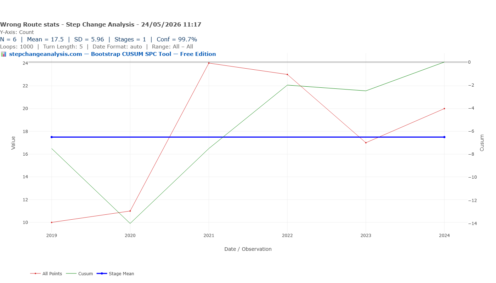
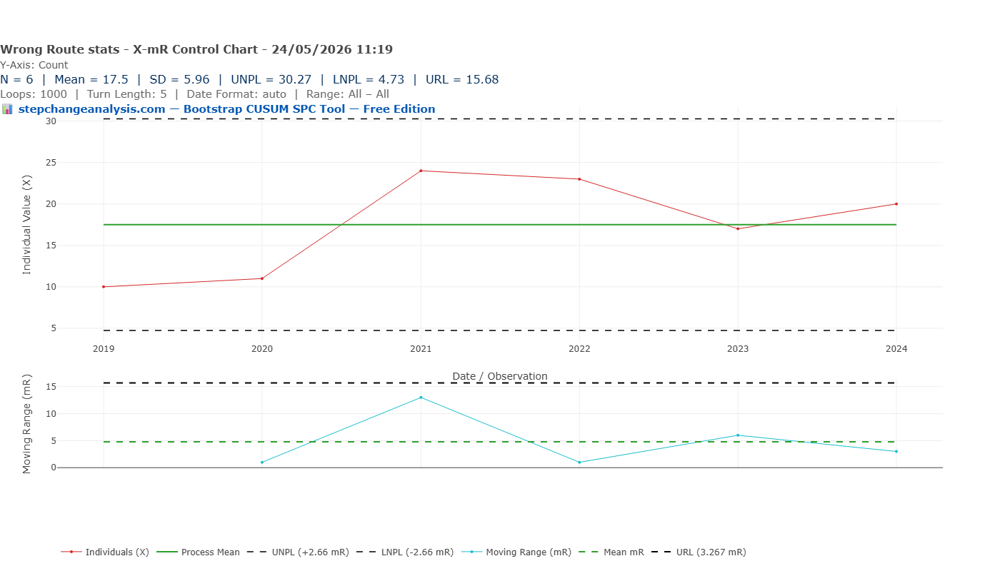
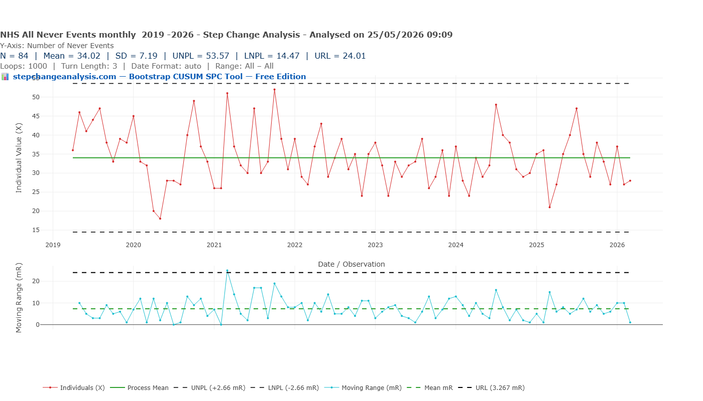
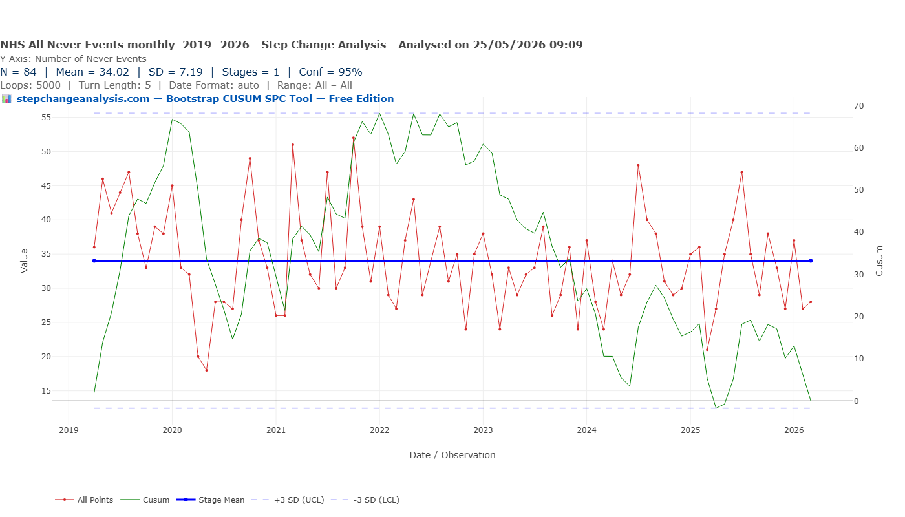

Wholly Preventable: Fifteen Years of a Never Event That Never Stopped
“Every system is perfectly designed to get the results it gets.”📈 Part of the StepChange improvement concepts libraryThis analysis sits within a broader framework for understanding why improvement programmes succeed or fail. Start with Why Nothing Changes for the full picture, or go to Start Here for a guided introduction to the method.
In 1987, Paul O’Neill stood up in front of Alcoa’s investors and said he wanted to talk about worker safety. Twelve years later, Alcoa’s market value had grown from $3 billion to $27.5 billion — and its injury rate had fallen to one-twentieth the US average. He never changed his focus. The NHS declared wrong-route medication administration “wholly preventable” in 2010. The engineering solution existed. The alerts were issued. The safety officers were appointed. Bootstrap CUSUM on six years of Never Events data finds one stage, no change point, mean 17.5 events per year. The difference between Alcoa and the NHS is not intent. It is method.
- Understand why a “wholly preventable” Never Event has not been prevented — and what the data shows.
- See how Bootstrap CUSUM applied to six years of incident data reveals whether NHS Never Event programmes produce structural change.
- Identify the difference between safety interventions that change the system and those that change the reporting.
- Apply the same honest measurement approach to patient safety data in your own trust.
↓ Jump straight to the Bootstrap CUSUM data · or the root cause
Same Data, Three Charts, Three Very Different Stories explains what the green CUSUM line means and why it detects structural change that other charts miss — including a step-by-step guide to reading the chart. Takes 5 minutes and makes every chart in this article easier to read.
Read above first 📚 Glossary — CUSUM, Deming, Meadows, Joiner, PDSA and more☰ Table of Contents — click to expand
- A wholly preventable event that keeps happening
- The intervention timeline: fifteen years of activity
- The data: Bootstrap CUSUM and X-mR applied to the post-2018 series
- The root cause: why the engineering solution didn’t fix it
- What Paul O’Neill did at Alcoa — and what it means for the NHS
- What genuine system change would look like
- A note on the data and its limitations
- Joiner’s Levels of Fix — where the NHS has been operating
- Joiner’s three strategies for improving a stable process
- The conclusion Deming would have drawn
- Confirmatory analysis: total Never Events monthly 2019–2026
A wholly preventable event that keeps happening
A Never Event is not simply a serious incident. It is a specific category of patient safety event that the NHS defines as “wholly preventable” because strong systemic barriers exist at a national level to prevent it. The designation carries a precise implication: if the barriers are implemented, the event should not occur. The Never Events framework was created in 2010 on exactly this premise.
Wrong-route medication administration — oral medication injected intravenously, neuraxial medication given IV, oral liquids drawn up in the wrong syringe — has been on the Never Events list since the framework launched. The engineering solution to prevent it, ISO 80369 physically incompatible connectors, was specified in the same year. Fifteen years of alerts, mandatory safety officers, revised frameworks, and connector mandates have followed.
Last year, there were 20 wrong-route medication Never Events in NHS England. The year before, 17. The year before that, 23. Bootstrap CUSUM applied to the post-2018 framework series finds exactly what the raw data suggests: one stage, no change point, a flat mean of 17.5 events per year. The process is in statistical control. It is not producing random events. It is reliably, predictably, year after year producing wrong-route medication errors — because the system that produces them has not fundamentally changed.
The intervention timeline: fifteen years of activity
This is not a story of neglect. The NHS has applied substantial effort to wrong-route medication errors for fifteen years. The timeline below shows the interventions against the hierarchy of controls — the safety science framework that classifies interventions from weakest (training) to strongest (elimination).
To understand why fifteen years of activity produced no detectable change in the Bootstrap CUSUM, it helps to first understand the hierarchy of controls — the safety science framework that classifies interventions from weakest to strongest. The NHS has not been applying the wrong tool. It has been applying tools from the wrong layer.
🔗 Cross-article note: The hierarchy of controls is one of three frameworks that converge on the same diagnosis. For a full comparison of COMAH / Meadows leverage points / Joiner Levels of Fix applied to UK climate policy, see Three frameworks, one lesson in The Grid Fixed Itself. Transport Didn’t. — the same argument applied to 35 years of UK carbon emissions data. The pattern is identical: the interventions that failed operated at the wrong layer. The one that worked hit Meadows Level 6.
Hierarchy of Controls — Wrong-Route Medication
† Source note: The hierarchy of controls framework is adapted from occupational health and safety engineering practice, where it is applied under COMAH and HSE regulation in Major Hazard installations. See: NIOSH Hierarchy of Controls, cdc.gov/niosh/topics/hierarchy. The equivalent NHS framing distinguishes between “strong systemic barriers” (Layers 1–2) and behavioural/procedural controls (Layers 3–4) — see NHS England Never Events Policy and Framework (2018) and CQC “Opening the Door to Change” (2018).
With this framework in mind, the intervention timeline below maps fifteen years of NHS activity against the layers it addresses. The pattern is unambiguous.
🕑 Intervention timeline 2004–2025
Mapped against the hierarchy of controls, the pattern is clear. The NHS has applied Layer 3 (administrative) and Layer 4 (training and procedural) controls extensively and repeatedly. Layer 2 (engineering) has been partially implemented — neuraxial connectors mandated by January 2025, enteral connectors available but not universally enforced. Layer 1 (elimination) has never been systematically applied.
The data: Bootstrap CUSUM and X-mR applied to the post-2018 series
The Never Events framework was substantially revised in February 2018, rationalising and merging the medication sub-categories into a single consistent definition. The post-2018 series therefore represents the cleanest, most directly comparable dataset available — six financial years, one consistent definition, all drawn from final confirmed NHS annual reports.
📊 Data note: All figures from NHS England Never Events Final Annual Reports, Table 2 “Administration of medication by the wrong route.” Financial years 2018–19 to 2023–24. Pre-2018 data used different sub-categories (wrong-route chemotherapy, oral/enteral parenteral, IV epidural) that were merged in the 2018 framework revision — direct comparison with post-2018 figures is not appropriate, as noted by NHS England. The post-2018 series is used throughout this article. ⇣ Download the data CSV
| Financial Year | Wrong-route Never Events | Notes |
|---|---|---|
| 2018–19 | 10 | First year post-2018 framework revision — possible transition effect |
| 2019–20 | 11 | Possible transition effect; final weeks affected by COVID (Feb–Mar 2020) |
| 2020–21 | 24 | COVID year — counterintuitive spike, see note below |
| 2021–22 | 23 | |
| 2022–23 | 17 | |
| 2023–24 | 20 | |
| Mean | 17.5 | SD = 5.96 |


📊 What these two charts tell you together
The Bootstrap CUSUM asks: did the process structurally change at any point during this period? The answer is no — one stage, no change point at 99.7% confidence. This means no intervention produced a statistically detectable step change in the annual wrong-route count.
The X-mR chart asks: are individual annual counts behaving as common cause variation around a stable mean, or are any values signalling something outside normal system behaviour? The answer is common cause variation throughout — including the COVID year. Every value sits within the natural process limits.
Together they say the same thing: this is a process in statistical control, producing roughly 17–18 wrong-route medication Never Events per year, and it has been doing so consistently since the post-2018 framework was introduced. The variation from year to year is the normal noise of the system, not a signal of anything changing.
The COVID year — a counterintuitive signal
The 2020–21 count of 24 is the highest in the series despite NHS activity falling significantly during the pandemic. This is counterintuitive — you might expect fewer wrong-route errors when fewer procedures are being performed. The X-mR chart correctly identifies this as common cause variation (it sits within the UNPL of 30.27) but the clinical explanation is important. Several factors likely contributed:
- Staff redeployment to unfamiliar settings. Nurses and doctors working outside their normal wards encountered different drug storage layouts, unfamiliar syringe types, and medications they did not routinely handle. The system conditions that produce wrong-route errors — mixed storage, dual syringe availability, cognitive load — were replicated in new settings without the local familiarity that partially compensates for them.
- Disruption to normal checking procedures. PPE requirements, physical distancing, and emergency working conditions made double-checking harder under exactly the conditions where cognitive errors are most likely.
- A genuinely resilient system would have been protected from this. If Layer 1 controls — pharmacy unit-dose dispensing, physical removal of Luer syringes — had been in place, the COVID disruption would not have produced more wrong-route errors. The spike is evidence that the system’s protection depends on staff familiarity rather than system design.
The 2018-19 and 2019-20 low figures — framework transition or genuine improvement?
The two lowest years in the series — 2018–19 (10) and 2019–20 (11) — deserve specific scrutiny. Three explanations are plausible:
- Framework transition reporting uncertainty. The February 2018 revision merged three sub-categories into one and changed the reporting pathway. Trusts adapting to new definitions in the first year or two may have under-reported or misclassified some events. NHS England explicitly notes that direct pre- and post-revision comparisons are not appropriate.
- Anticipatory attention effect. The 2018 framework revision was consulted on in 2017 and widely communicated. Heightened organisational attention during the transition may have temporarily suppressed error rates. That heightened attention faded as the new framework became routine, producing the jump to 24 in 2020–21.
- The values remain within natural process limits. The X-mR LNPL is 4.73. Both 10 and 11 sit comfortably above this. They are common cause variation — the system behaving at the lower end of its natural range, not evidence of structural improvement.
The honest conclusion: 2018–19 and 2019–20 are most likely a combination of transition reporting effects and temporary heightened attention, not genuine system improvement. The subsequent return to higher counts confirms this — a real improvement would have held.
The root cause: why the engineering solution didn’t fix it
The ISO 80369 connector is the right engineering answer to wrong-route medication errors. Physically incompatible connectors that cannot be joined between IV, enteral, neuraxial and epidural routes make wrong-route connection structurally impossible. If universally implemented, wrong-route Never Events should have collapsed toward zero somewhere around 2015–2018 as rollout completed.
They didn’t. The HSIB investigation into an oral-to-IV wrong-route error, published in 2019, explains precisely why. The finding was not that ENFit syringes were unavailable — they were. The finding was that staff were decanting the oral medication out of the ENFit syringe into a standard Luer syringe, at which point the engineering protection was gone entirely.
⚠️ The decanting problem — HSIB findings
The HSIB investigation found three interlocking conditions that produced the error:
1. Physical bypass of the engineering barrier. ENFit oral syringes physically cannot connect to an IV line — but nothing prevents a nurse from drawing the oral liquid out of the ENFit syringe into a Luer syringe. Once in a Luer syringe, the liquid is indistinguishable from an IV preparation and can be connected to any IV line.
2. Mixed storage. Oral and IV forms of the same drug — midazolam is the classic case — were stored together in the same controlled drugs cupboard. Under time pressure, distraction, or unfamiliarity, the wrong formulation was selected.
3. No national double-checking standard. There is no national standard for second-person checking of medication preparation and administration. Individual trusts have local policies but these are inconsistently applied and do not constitute a systemic barrier.
The engineering solution has a human factors gap at the point of use. The connector redesign addressed the hardware. It did not address the workflow that bypasses it.
This is not a failure of the engineering solution. ENFit works. NRFit works. The failure is in treating engineering controls as complete when the workflow that surrounds them still permits the error to occur. Layer 2 without Layer 1 leaves the decanting workaround available. Layer 1 — pharmacy unit-dose dispensing, so ward staff never draw up oral liquids at all — removes the workaround entirely.
See this exact case mapped as a completed fishbone diagram and 5 Whys chain — the People, Process, Equipment, Environment, and Management causes laid out visually, with the root cause traced to the same accountability gap this section describes.
❓ Why did investigations miss this for fifteen years?
This is a legitimate question. The HSIB investigation in 2019 identified the decanting mechanism precisely. The conditions — mixed storage, dual syringe availability, no national checking standard — were not hidden. They were visible to anyone who walked onto a ward. Why did fifteen years of Serious Incident investigations not produce a system change?
Possibly no prospective FMEA. Failure Mode and Effects Analysis applied before the ISO 80369 rollout would likely have identified the decanting workaround as a predictable failure mode. FMEA asks: how could this fail? The answer was foreseeable. It may not have been systematically asked.
Possibly no PDSA cycle with pre-specified outcome. Each intervention may have been implemented without a pre-specified prediction: “if this works, wrong-route events will fall below X within Y months.” Without that prediction, there is no study step. Without a study step, there is no learning.
Possibly the work environment was not studied. Deming’s fourth lens — psychology — requires understanding the conditions under which people actually work. Systematic observation of the actual work environment — how often preparation is interrupted, how much noise is present, how frequently staff are called away mid-task — would likely reveal conditions specifically designed to produce errors of exactly this kind.
Investigations may have involved the wrong people. Serious Incident investigations are typically conducted by clinical and governance staff. The system conditions that produce wrong-route errors — procurement decisions about syringe stock, pharmacy dispensing practice, ward layout — are owned by pharmacy directors, supply chain managers, and facilities teams. The people who could change the system conditions were rarely in the investigation room.
What Paul O’Neill did at Alcoa — and what it means for the NHS
In October 1987, Paul O’Neill stood up in front of Alcoa’s investors and board and said he wanted to talk about worker safety. The room went silent. Investors had come expecting a financial turnaround strategy. O’Neill told them: “Every year, numerous Alcoa workers are injured so badly that they miss a day of work. I intend to make Alcoa the safest company in America. I intend to go for zero injuries.”
Many investors sold their stock that day. It was one of the greatest investment mistakes in recent corporate history.
🏢 Alcoa 1987–1999: what happened
Starting injury rate (1987): 1.86 lost workdays per 100 workers — already the best in the aluminium industry
Ending injury rate (1999): 0.2 lost workdays per 100 workers — one-twentieth the US average
Market value 1987: $3 billion · Market value 1999: $27.5 billion
Net income 1987: $200 million · Net income 1999: $1.484 billion
O’Neill achieved this not by managing financial metrics but by understanding that fixing safety required fixing everything else: processes, communication, training, equipment, culture, procurement. Safety was the keystone that unlocked systemic improvement across the whole organisation.
The parallel with NHS Never Events is precise. Alcoa was already the safest company in the aluminium industry — exactly as the NHS has interventions that exceed the global average in intent and documentation. O’Neill said “best in industry” and “wholly preventable” are not the same statement. He was right.
📝 Deming’s System of Profound Knowledge — applied to wrong-route Never Events
“A bad system will beat a good person every time.” — W. Edwards Deming
Appreciation for a system. A wrong-route error looks like an individual failure — a nurse drew up an oral liquid into a Luer syringe. It is a system failure. The system stores oral and IV midazolam on the same shelf. The system provides both ENFit and Luer syringes on the same ward. The system has no national double-checking standard. Remove any one of those conditions and the error rate falls. The NHS investigates the individual. O’Neill redesigned the system.
Knowledge of variation. The Bootstrap CUSUM shows one stage and no change points. This is common cause variation around a stable mean — the signature of a system whose underlying conditions have not changed. The NHS treats each Never Event as a special cause: local investigation, retraining, new local policy. Deming called this tampering — acting on common cause variation as though it were special cause. It adds cost without moving the mean.
Theory of knowledge. Not one intervention in the fifteen-year timeline was accompanied by a pre-specified prediction: “we expect this to reduce wrong-route events by X within Y months, confirmed at Z confidence.” Bootstrap CUSUM makes prospective evaluation possible. The intervention that genuinely moves the mean will produce a detectable change point. Until then, the system has not responded.
Psychology. The Never Events framework and mandatory Serious Incident investigations create exactly the management-by-fear environment Deming warned against. That pressure does not change the system that produces the error. It demoralises the staff who work within it — who are, as O’Neill understood, victims of the system rather than its cause.
What genuine system change would look like
The Bootstrap CUSUM cannot detect a change that hasn’t happened. But it can tell you, prospectively, what it would need to see. A genuine Layer 1 intervention — pharmacy unit-dose oral dispensing across all high-risk settings, removal of Luer syringes from wards where oral liquids are prepared — should produce a detectable step change within 18–24 months of full implementation.
With the current mean of 17.5 and SD of 5.96, a genuine sustained reduction to a mean of 8–10 (roughly halving the rate) would be detectable at 95% confidence within approximately 3–4 years of sustained data. A reduction to near zero — which is what “wholly preventable” implies — would be detectable within 2 years.
The system change required has three components, all identified by the HSIB investigation and all within the NHS’s operational control:
- Pharmacy unit-dose oral dispensing. If oral medications arrive on wards in pre-labelled, ready-to-administer unit doses, ward staff never draw up oral liquids at all. The decanting step — the moment when the engineering barrier is bypassed — does not occur. This is Layer 1 elimination.
- Removal of universal Luer syringes from high-risk settings. If Luer syringes are not available in settings where oral liquids are prepared, they cannot be used to draw up oral liquids. This requires procurement change and ward stock redesign but does not require any change in staff behaviour — the option simply does not exist.
- Separate storage of oral and IV formulations. Oral and IV forms of high-risk drugs — midazolam, opioids, concentrated electrolytes — stored in physically separate locations eliminate the selection error that is the first step in most wrong-route events.
None of these require new technology. None require new staff. None require new training. They require system redesign: procurement decisions, pharmacy practice changes, and ward layout changes implemented consistently across NHS trusts. This is what O’Neill did at Alcoa. He didn’t retrain workers. He changed the conditions under which workers operated.
📋 The NHS’s own conclusion — 2024 framework consultation
In February 2024, NHS England launched a consultation on whether the Never Events framework remains an effective mechanism for patient safety improvement. The consultation acknowledged directly that “for several types of Never Events the barriers are not strong enough” — citing reports from the CQC and HSIB that called for the framework to be reviewed.
The NHS is asking the right question. The Bootstrap CUSUM provides one answer: in six years of post-2018 framework data, no structural improvement is detectable. The barriers have not been strong enough. The 2024 consultation is the opportunity to make them strong enough — by moving from Layer 3 and 4 controls to Layer 1.
A note on the data and its limitations
A sceptical reader might ask: is six data points enough to draw any conclusion? The statistical answer requires a careful distinction between two different questions — and a reframing of what “six” actually means here.
Six annual aggregates — but six years of 105 investigated events
The Bootstrap CUSUM sees six data points. But behind those six annual totals sit approximately 105 individual wrong-route medication events (6 × 17.5), every one of which was reported to StEIS, investigated as a Serious Incident, reviewed by a Medication Safety Officer, and analysed by NHS England for the annual report. This is not sparse data in any clinical sense. It is a complete, mandatory, independently verified record of every wrong-route Never Event across the entire NHS in England for six years.
Six years is also a substantial real-world observation window. At Alcoa, O’Neill saw meaningful injury rate improvement within the first year. The NHS has had six full years under a consistent post-2018 framework. The question “is six years long enough to see improvement if improvement were happening?” has a clear answer: yes, if a genuine Layer 1 system change had been implemented, a detectable step change would have appeared within two to three years. None has.
What the null result is and is not valid for
Bootstrap CUSUM with N=6 has wider confidence intervals than a longer series. The specific limitation is this: the method could only reliably detect a large sustained shift — roughly a reduction from 17.5 to below 8, or an increase above 27. A moderate improvement might not be detectable at 99.7% confidence with this sample size.
A sceptical reader might therefore ask: could a moderate improvement be under way but hidden? The data answers this directly. Look at the six values: 10, 11, 24, 23, 17, 20. The most recent three years are 24, 17, 20 — oscillating around the series mean, with no downward clustering, no suggestion of approach toward a lower level. The data does not look like a process that is moderately improving. It looks like a process that is not improving at all. The statistics confirm the visual.
Two independent methods agree on the same conclusion. The Bootstrap CUSUM finds one stage, no change point. The X-mR chart finds all six values within natural process limits. When two methodologically distinct approaches applied to the same small dataset produce the same null result, that convergence is meaningful.
The knock-on effect: why wrong-route matters beyond wrong-route
The system changes required to eliminate wrong-route medication errors — pharmacy unit-dose dispensing, physical separation of oral and IV drug storage, removal of Luer syringes from high-risk settings — would simultaneously reduce the conditions that produce other medication Never Events. Fix the wrong-route system conditions at Layer 1 and you restructure the medication safety environment across multiple Never Event categories simultaneously.
The wrong-route count is the canary — the sentinel measure whose behaviour tells you about the health of the whole mine. If the canary is still singing the same flat note after fifteen years of intervention, the mine has not been made safe.
| Statistical parameter | Value | Interpretation |
|---|---|---|
| N (annual aggregates) | 6 | Statistically thin — honest limitation stated above |
| Individual events represented | ~105 | Complete mandatory record, every event investigated |
| Mean | 17.5 per year | Stable process mean — no trend up or down |
| SD | 5.96 | Year-to-year variation |
| CUSUM stages | 1 | No structural change at 99.7% confidence |
| UNPL (X-mR) | 30.27 | Upper natural process limit |
| LNPL (X-mR) | 4.73 | Lower natural process limit |
| Points outside limits | 0 | All values common cause variation |
| Independent confirmation | X-mR agrees | Two methods, same null result — convergent evidence |
Joiner’s Levels of Fix — where the NHS has been operating
Brian Joiner’s Fourth Generation Management introduces a complementary framework to the hierarchy of controls: the three Levels of Fix. The notion is simple — many problems in an organisation stem from the same deep causes. The deeper we can push a fix, the more problems we will be able to solve or prevent, and the more rapidly we will improve.
| Level | Description | NHS Never Events application |
|---|---|---|
| Level 1 Fix the Output |
Promptly correct problems that appear in an existing output or occur during delivery of a service. Firefighting — correct the immediate problem to keep the customer. Does not prevent the same problem occurring again. | Each wrong-route Never Event triggers a Serious Incident investigation, an apology, a remedial action plan. The immediate harm is addressed. The next event is not prevented. The NHS has been operating at Level 1 for fifteen years. |
| Level 2 Fix the Process |
Change the process that allowed the problem to occur. Develop ways to prevent recurrence. For example, creating a checklist to help ensure nothing is missed or done incorrectly. | The MSO mandate, NatSSIPs, double-checking protocols, colour-coded syringes, training on ENFit. All process-level interventions. All Layer 3 and 4 in the hierarchy of controls. None detectable in the Bootstrap CUSUM. |
| Level 3 Fix the System |
Change the system that allowed the faulty process or service to operate with these deficiencies. These system-level issues are usually deep core issues captured in Deming’s 14 points: lack of constancy of purpose; barriers between departments; management by fear; reliance on inspection rather than prevention. Some are easily changed policies; others require dedicated effort. | Pharmacy unit-dose dispensing; removal of Luer syringes from high-risk settings; separated drug storage mandated across all trusts; procurement standards that prevent both syringe types being stocked on the same ward. None systematically implemented. This is where the Bootstrap CUSUM change point will appear — when and if it ever does. |
📝 Deming’s system-level failures — present in this data
Lack of constancy of purpose. The Never Events framework has been revised multiple times. Financial sanctions were introduced then removed. Categories were merged and redefined. Each revision resets organisational attention without changing the underlying system conditions.
Barriers between departments. The people who investigate wrong-route errors (clinical governance) and the people who own the system conditions that produce them (pharmacy, procurement, facilities) operate in separate organisational silos.
Management by fear and inspection. The Never Events designation creates mandatory investigation and reporting. Staff know a Never Event on their ward triggers scrutiny. That pressure does not change the system. It demoralises the people working within it.
Unfair demands on workers. A nurse drawing up medication in a busy ward, with both syringe types available, oral and IV drugs stored together, and no physical barrier to the error, is being asked to do it right the first time in exactly the conditions Deming identified as unfair.
Suppliers as part of the system. A procurement standard that prevented Luer syringes being supplied to wards where oral liquids are prepared would be a supplier-level system fix. It has not been implemented.
Joiner’s three strategies for improving a stable process
The Bootstrap CUSUM has confirmed what the raw data suggests: this process is stable. A common misconception is that a stable process cannot be improved. Joiner identifies three strategies for improving a process that is in statistical control.
💡 Joiner’s three strategies — applied to wrong-route Never Events
“In a common cause situation, there is no such thing as THE cause.” — Brian Joiner, Fourth Generation Management
Strategy 1 — Stratify. Sort the data into groups and look for patterns. The national aggregate of 17.5 wrong-route events per year is one number. Within that aggregate, are some trusts producing zero wrong-route events for sustained periods? Are some drug types (midazolam, opioids) responsible for a disproportionate share? Are events concentrated in certain settings (ICU, theatres, paediatrics)?
The NHS Never Events annual reports publish trust-level data in Table 3 of each report. A trust-level analysis using Bootstrap CUSUM would identify whether any trust has achieved a sustained structural reduction — the Bright Spots approach. A trust whose wrong-route count has been zero for three or more consecutive years is a bright spot. The CUSUM date tells you when something structurally changed. The investigation asks what changed at that trust — and whether it is replicable.
Strategy 2 — Experiment. Make planned changes and learn from the effects. Pre-specify what a successful intervention looks like, implement it in a defined setting, monitor with Bootstrap CUSUM for a pre-agreed period, and declare success or failure based on the statistical evidence. Not an alert. Not a framework revision. A controlled experiment with a measurable outcome.
Strategy 3 — Disaggregate. Divide the process into component pieces and manage the pieces. The aggregate wrong-route count combines at least three distinct mechanisms: oral-to-IV (the most common), neuraxial-to-IV (addressed by NRFit connectors), and epidural-to-IV. The 2023–24 annual report shows 16 of 20 wrong-route events were oral-to-IV. The NRFit mandate addresses a minority of events. Fix the oral-to-IV pathway specifically and the aggregate will move.
Stratify, Experiment, Disaggregate. Three strategies for improving a stable process, none of which require a new framework, a new alert, or a new safety officer. They require analytical discipline, pre-specified predictions, and the willingness to wait for statistical evidence before claiming success.
The conclusion Deming would have drawn
The NHS has not failed to try. It has failed to change the system. Fifteen years of alerts, mandates, frameworks, and revised standards have produced a process that is, by every SPC measure, unchanged. The mean is 17.5. The variation is common cause. The CUSUM shows one stage.
Deming argued that 94% of problems are system failures, not individual failures. Every wrong-route medication Never Event in this dataset triggered a local investigation, a root cause analysis, a retraining programme, a new local policy. None of those responses changed the system that produced the event. The system continued to produce events at the same rate because the conditions that make wrong-route errors possible — mixed storage, dual syringe availability, no national double-checking standard, no pharmacy unit-dose dispensing — remained in place.
O’Neill understood this intuitively and proved it numerically over twelve years at Alcoa. He declared injuries unacceptable, identified the system conditions that produced them, and changed them. The NHS has declared wrong-route medication errors unacceptable. The data says they are happening at the same rate they have always happened. The gap between those statements is not a gap in effort or intent. It is a gap in method.
Batalden’s observation, quoted at the top of this article, is the most precise summary of the Bootstrap CUSUM finding possible. The NHS medication safety system is perfectly designed to produce 17.5 wrong-route errors per year. Change the design and you change the result. Leave the design unchanged and the CUSUM will be flat in 2030 just as it is flat today.
💡 The question that should precede every intervention
“A numerical goal without a method is nonsense.” — W. Edwards Deming, Out of the Crisis (1982)
Before the next alert is issued, the next framework revised, the next safety officer appointed, one question should be asked and answered in writing: by what method will this intervention reduce the annual wrong-route Never Events count, by how much, within what timeframe, confirmed at what statistical confidence?
That is not a bureaucratic question. It is the only question that separates system change from tampering. O’Neill asked it at Alcoa in 1987. The NHS Never Events framework has been asking a different question — how do we respond to this event? — for fifteen years. The Bootstrap CUSUM shows what happens when you answer the wrong question repeatedly and call it improvement.
Confirmatory analysis: total Never Events monthly 2019–2026
The wrong-route series uses annual aggregates giving N=6. As a confirmatory analysis, monthly data for all Never Event types combined is available from NHS England provisional monthly publications, giving N=84 monthly observations from April 2019 to March 2026. This series has substantially more statistical power and provides an independent test of whether the broader Never Events picture tells a different story from the wrong-route subset.
📊 Data note: Monthly total Never Events counts extracted from NHS England provisional Never Events publications, April 2019 to March 2026, N=84. Source: NHS England Patient Safety Data publications. england.nhs.uk


Read together, the two analyses say the same thing at two different scales. The wrong-route subset (N=6 annual, mean 17.5/year) and the total Never Events series (N=84 monthly, mean 34/month) both show one stage, no change point. Batalden’s observation applies at both scales: every system is perfectly designed to get the results it gets.
Reproduce this analysis on your own data
Upload any patient safety time series as a CSV and apply Bootstrap CUSUM step-change analysis. Free, browser-based, no data leaves your computer.
📊 Open the Free Tool📊 Data note: Wrong-route medication Never Events, NHS England, financial years 2018–19 to 2023–24. Source: NHS England Never Events Final Annual Reports, Table 2. Available at: england.nhs.uk/statistics/statistical-work-areas/patient-safety-data/. Pre-2018 data not used due to framework revision and category rationalisation. 2020–21 flagged as COVID year. Total Never Events monthly series: NHS England provisional Never Events publications, April 2019–March 2026, N=84.